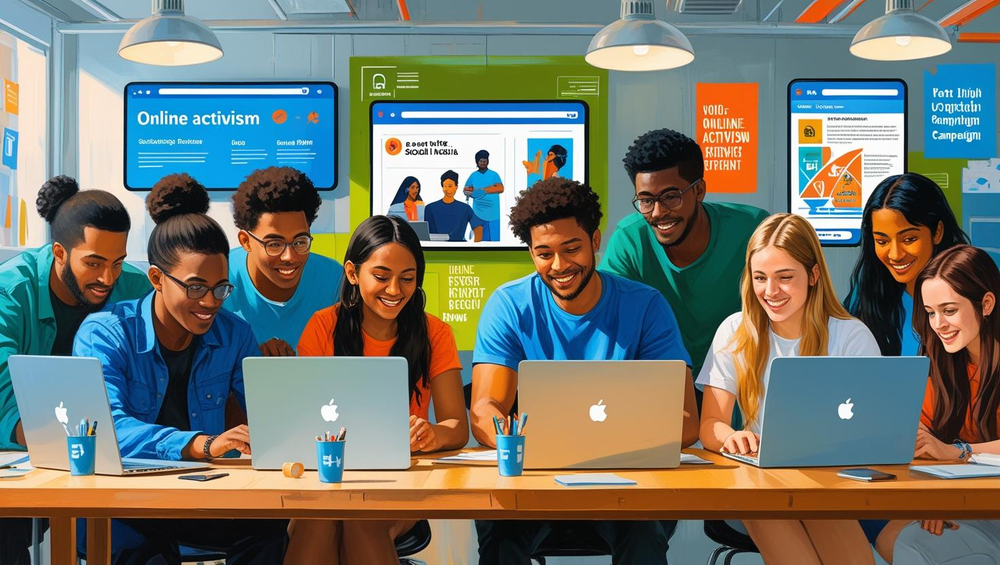

¿Qué es el Activismo en línea?
En la era digital, el activismo ha encontrado nuevas formas de expresión y organización a través del internet. Esta página está dedicada a explorar cómo las plataformas digitales se han convertido en herramientas poderosas para la defensa de derechos, la movilización social y la concientización global. Desde campañas virales hasta movimientos que nacen y crecen en redes sociales, el activismo en línea redefine la manera en que las personas se conectan, informan y luchan por un cambio significativo.
¿Quiénes somos?
En la era digital, el activismo ha encontrado nuevas formas de expresión y organización a través del internet. Esta página está dedicada a explorar cómo las plataformas digitales se han convertido en herramientas poderosas para la defensa de derechos, la movilización social y la concientización global. Desde campañas virales hasta movimientos que nacen y crecen en redes sociales, el activismo en línea redefine la manera en que las personas se conectan, informan y luchan por un cambio significativo.
En este respecto, nuestra organización de activismo busca darle voz a todas las gentes del mundo, vengan de donde vengan y sean lo que sean, todos merecemos ser oídos por simplemente ser parte de la creación de nuestro señor, que tan grande es que nos ha dado la vida y la existencia para así poder obrar en su nombre para hacer de este planeta un sitio más justo y más igualitario para todos los seres que lo habitan.
De ahí viene nuestro nombre, Voz y Fe, porque se requiere tener fe para poder darle voz a todo el mundo y porque la acción para salvar este planeta se va a hacer desde nuestra parte más profunda, el corazón, y porque amamos con toda nuestra alma este planeta y es por eso mismo que lo vamos a salvar informándonos sobre todo lo necesario para poder hacer que vosotros también hagáis algo por este planeta tan bello y precioso, porque merece la pena para que así nuestros hijos puedan ver un mañana mejor y no se pregunten cómo dejamos morir este páramo del universo tan bonito.